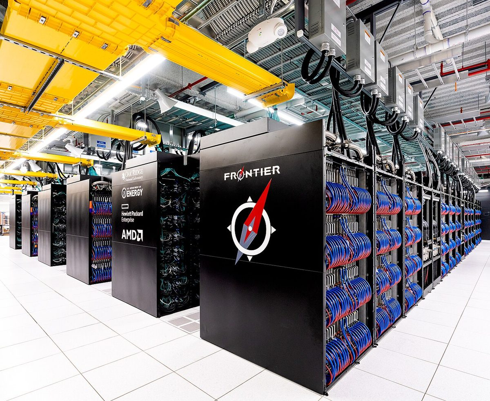

Colossus 2 heads for 1.2 million Blackwells as Google's satellite answers its first prompt
Musk described the training and inference clusters coming online in Memphis and predicted orbital compute will pass ground-based compute by the end of 2028. Google's prototype ran an open model on a chip in space.
Elon Musk @elonmusk · CEO, Tesla and SpaceX
Answering a thread on the Memphis buildings Saturday, Musk wrote at 1:45pm EDT: "Macroharder and Minihard both have 220k GB300s with 800 gig nics configured for training. Gun Range will have the same. Spam (used to house Hormel products) will have ~200k GB300s, but configured for inference, so much simpler networking and less than half the fiber." A NIC is a network interface card, and GB300 is Nvidia's latest Grace Blackwell chip. Gun Range, he added, "was literally the local police department's gun range that we bought." Minutes later: "There will be a total of around 1.2M Blackwells at Colossus 2 by end of year." That evening he put Macrohard at "110k GB200 and 220k GB300."
On Sunday he quoted a post calling Colossus 2 the world's most powerful AI data center at roughly 1.11 million H100 equivalents, ahead of OpenAI's Stargate:
"The other supercompute projects are unable to reach their goals, but SpaceX is already achieving ours"
To an investor discussing the company's spending, he wrote at 6:40am EST: "Our capex efficiency is greatly underestimated." Capex is capital spending. Replying to a SpaceX financial model on Friday, he looked further out: "Terrestrial compute will be peanuts compared to orbital compute. Orbital compute deployed per month probably exceeds terrestrial around the end of 2028 and then far exceeds it in 2029." On Saturday he congratulated SpaceX on more than 700 Falcon 9 flights.

Sundar Pichai @sundarpichai · CEO, Google and Alphabet
"A 'hello world' milestone for Project Suncatcher," Pichai wrote at 1:05pm EDT Friday. "After launching our prototype satellite a few weeks ago, we've now successfully sent a command up to orbit, booted up the TPU, ran the prompt, and received our first complete response back on earth - a haiku!" A TPU is a Tensor Processing Unit, Google's AI chip. Google's post says the onboard Gemma 4 open model wrote "Blue marble below / Data streams in silent grace / Starlight feeds my core," downlinked over Svalbard, Norway. The satellite, built with Planet, launched Oct. 1 on SpaceX's Transporter-18 rideshare.
It carries four TPUs and makes up to 1 kilowatt of power, so only one chip can run, for about 20 minutes at a time, TechCrunch reported. Next come radiation and heat tests, then two linked satellites in 2027. Musk quoted Pichai's post: "Cool."
Guillermo Rauch (@rauchg), chief executive of Vercel, at 11:54am EST Sunday: "Turns out alchemical dreams were real. We converted sand into superintelligence. Who cares about gold… We transmuted the most ordinary into the most extraordinary."


.jpg){kind=link}